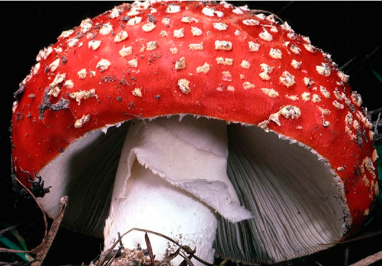
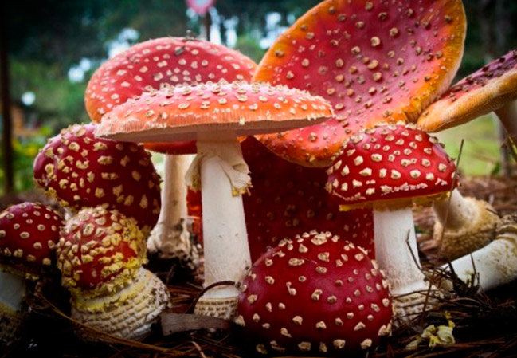
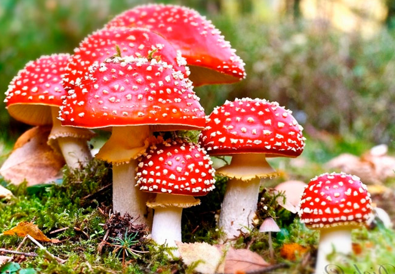

Польза и вред мухомора
Каждый ребенок знает, как опасны эти красные грибы, ведь мама не раз читала ему, что баба Яга варит из них колдовское зелье.
Да, этот гриб ядовит, но в ряде случаев польза мухомора восполняет эту ядовитость с лихвой: им лечатся не только люди, но и лесные животные. Узнаем, чем полезен этот красивый гриб, при каких болезнях его применяют как лекарственное средство, и кому он совершенно противопоказан.
Мухомор: польза и вред
Компоненты красного мухомора используются как в народной, так и в традиционной медицине. Фармакологи давно включают их в лекарственные средства, помогающие вылечить множеКомпоненты красного мухомора используются как в народной, так и в традиционной медицине. Фармакологи давно включают их в лекарственные средства, помогающие вылечить множество болезней.
Польза мухомора для людей
Вот какие недуги помогают вылечить свежие и сушеные мухоморы, польза которых доказана учеными – медиками:
- Эпилепсию, повышенную возбудимость, рассеянный склероз, нарушения сна: мухомор успокаивает нервную систему.
- Ангины и другие воспаления горла, связанные с простудой: компоненты мухомора действуют как антибиотик и быстро расправляются с болезнетворными микробами.
- Спазмы сосудов, тромбофлебит, варикоз, атеросклероз.
- Остеохондроз, неврозы, невралгию и иные патологии нервной системы.
- Долго заживающие раны: мухомор, обладая антибактериальными свойствами, помогает при свищах, пролежнях и фурункулах.
- Артрозы, артриты и другие патологические изменения суставов.
- Различные кожные патологии: микроскопические дозы ядов и других активных веществ в мухоморе помогают вылечить кожные болезни. Мухомор расправляется с папилломами и бородавками, экземами, псориазом, грибками, дерматитами и пиодермией.
- Бронхит и туберкулез: мухомор облегчает отхождение мокроты и ускоряет процесс выздоровления.
- Половое бессилие, гипертонию, атонию кишечника, ишемию, судороги и диабет
Кроме того, лекарства и народные снадобья помогают женщинам при болезненных месячных и тяготах климакса.
Польза для животных
Этот красноголовый представитель грибного царства приносит пользу не только людям, но и животным. Лесные животные также пользуются целебными свойствами этого гриба. Время от времени его поедают лоси, олени, медведи и белки.
Сначала предполагалось, что животным нравится легкое галлюциногенное действие гриба, но оказалось, что поедание мухоморов – это способ избавления от глистов и иных паразитов
Например, в кишечнике лося обитает примерно десять видов паразитов, отравляющих организм животного. Чтобы не погибнуть от их жизнедеятельности, лось вынужден поедать красные мухоморы
Промываем желудок теплой чистой водой, чтобы вымыть остатки грибов или лекарства. Все просто: выпиваем воду, давим пальцами на корень языка и вызываем рвоту.
Потом желательно принять несколько таблеток активированного угля – 1 штука на 10 килограммов веса